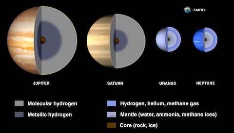

What is a Gas Giant?
A gas giant is a large planet mostly composed of helium and/or
hydrogen. They don't have hard surfaces and instead have swirling
gases above a solid core. There are four gas giants in our solar
system: Jupiter, Saturn, Uranus, and Neptune.
Click here for more information about the Gas Giants.
Additional Information:
| Name | Diameter | Distance from Sun |
|---|---|---|
| Jupiter | 139,822 km | 778,340,821 km |
| Saturn | 116,464 km | 1,426,666,422 km |
| Uranus | 50,724 km | 2,870,658,186 km |
| Neptune | 49,244 km | 4,498,396,441 km |

What the interior of each gas planet is made up of
Click here to visit NASA's page about the interiors of the Gas Giants.